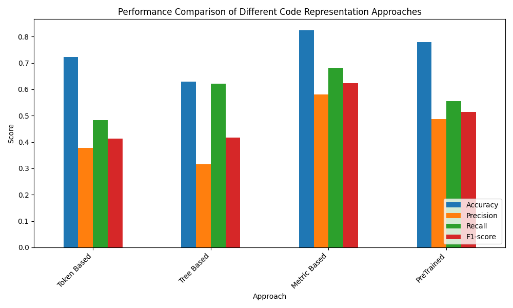

MLCQ God Class Logistic Regression Evaluation Approaches
Comparison Table
| Approach |
Accuracy |
Precision |
Recall |
F1-score |
| Token Based |
0.7225 |
0.3785 |
0.4830 |
0.4135 |
| Tree Based |
0.6285 |
0.3162 |
0.6221 |
0.4159 |
| Metric Based |
0.8250 |
0.5799 |
0.6819 |
0.6228 |
| PreTrained |
0.7798 |
0.4864 |
0.5554 |
0.5140 |
Bar Plot

Evaluation Results
Logistic Regression - Token Based
- Accuracy: 0.7225
- Precision: 0.3785
- Recall: 0.4830
- F1-score: 0.4135
Logistic Regression - Tree Based
- Accuracy: 0.6285
- Precision: 0.3162
- Recall: 0.6221
- F1-score: 0.4159
Logistic Regression - Metric Based
- Accuracy: 0.8250
- Precision: 0.5799
- Recall: 0.6819
- F1-score: 0.6228
Logistic Regression - PreTrained
- Accuracy: 0.7798
- Precision: 0.4864
- Recall: 0.5554
- F1-score: 0.5140